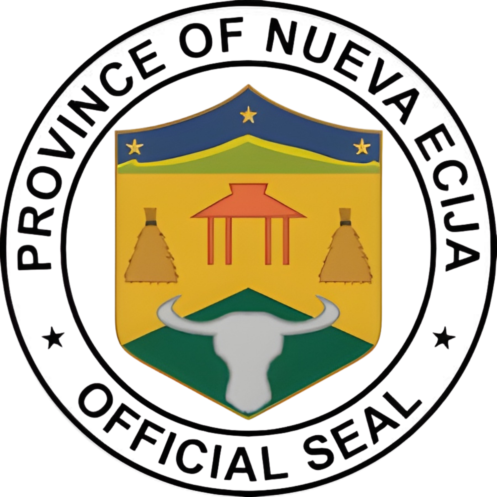
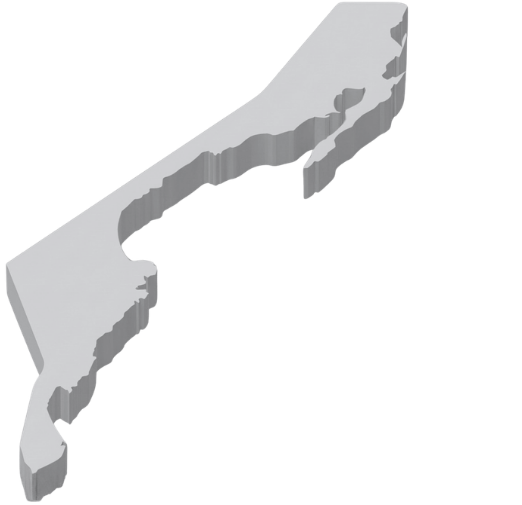
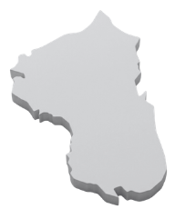
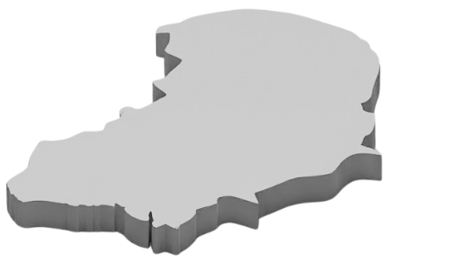
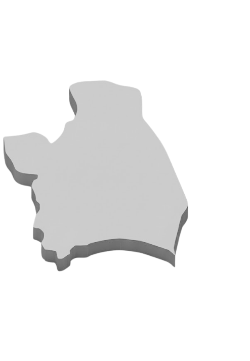
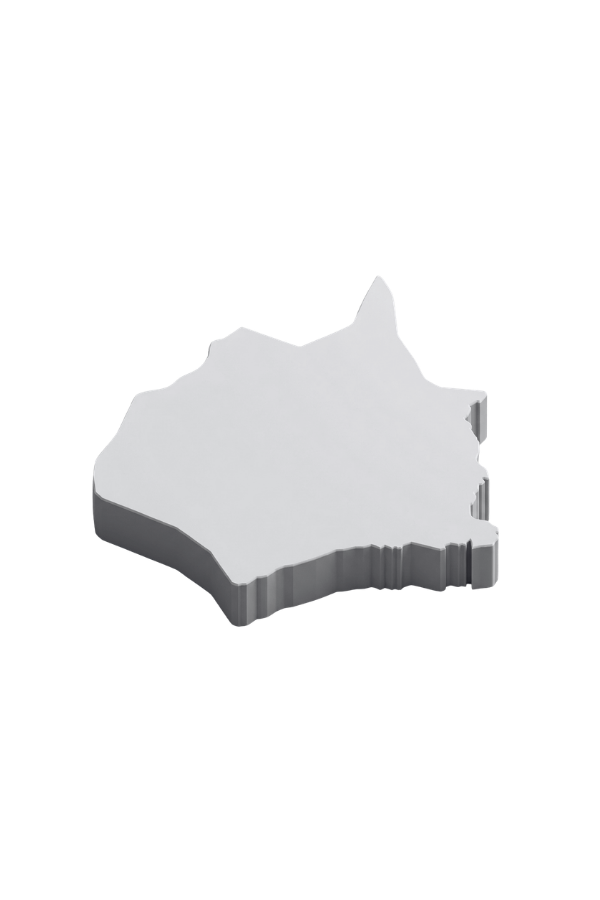

AURORA
BATAAN
BULACAN
NUEVA ECIJA
PAMPANGA
TARLAC
ZAMBALES
Nueva Ecija
Rice Granary of the Philippines
Wika at Diyalekto
Mga Bayani
Pinagmulan ng Pangalan ng Lalawigan
Maikling Kasaysayan
Pangunahing Hanapbuhay
Paano Gamitin ang ClickFlash
Maligayang pagdating! Narito ang maikling gabay upang mas madaling ma-explore ang mapa.
1. I-click ang logo ng lalawigan o ang pangalan nito sa mapa.
2. Lalabas ang mas detalyadong mapa ng napiling lalawigan.
3. I-click ang lungsod o bayan upang makita ang impormasyon nito.
4. Gamitin ang zoom controls upang mas makita nang malinaw ang mapa.
5. Pindutin ang “Back to Province” upang bumalik sa kabuuang detalye ng lalawigan.